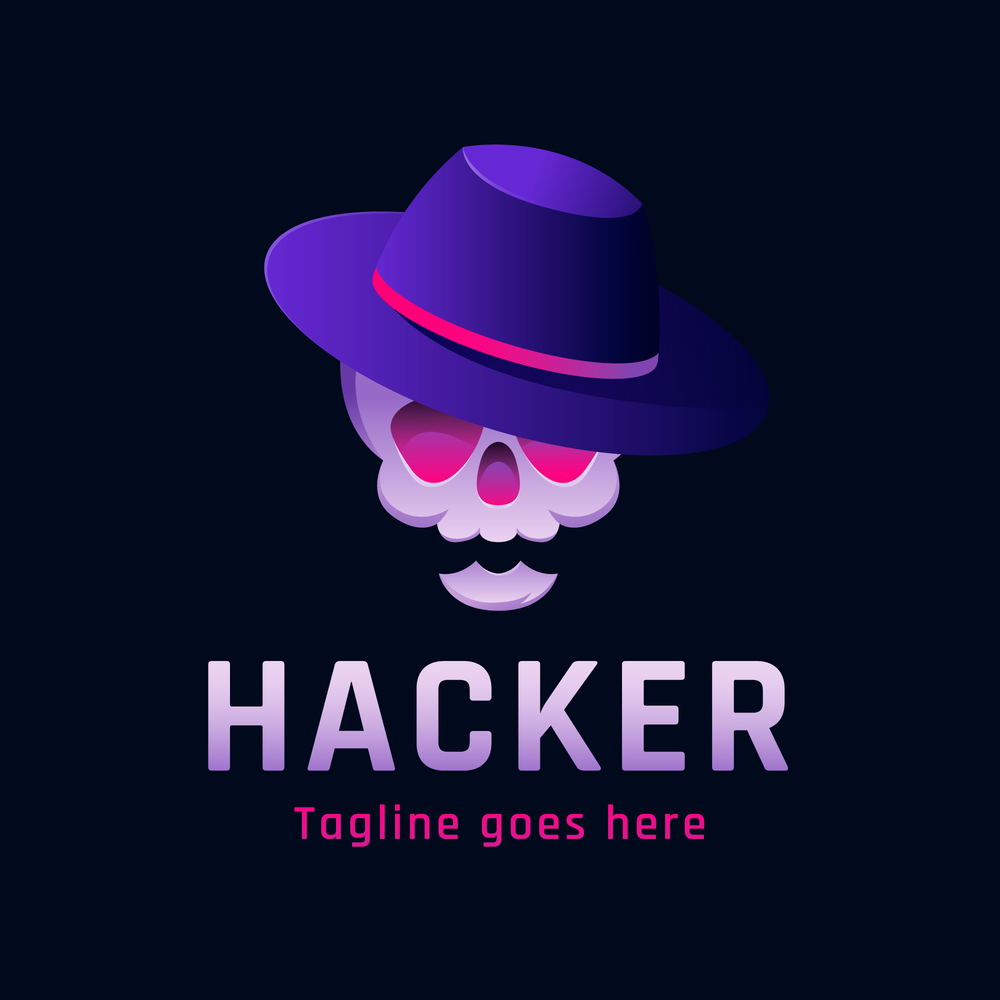

<div class="container-home bg-dark-custom">
  <div class="glass-material">
    <div class="text-center p-5">
      <div class="row-custom">
        <div class="col">
          <div class="img-profile">
            
            <h3 class="text-white text-name">Yorlin Quispe Ygnacio</h3>
          </div>
          <div class="container-description">
            <div class="description">
              <div>
                <p>
                  <i class="fa-solid fa-building-circle-check"></i> - NTTDATA
                </p>
              </div>
              <div>
                <p><i class="fa-solid fa-map-location"></i> - Lima Perú</p>
              </div>
              <div>
                <p><i class="fa-solid fa-briefcase"></i> - DevOps | Fullstak</p>
              </div>
              <div>
                <a href="">
                  <p><i class="fa-brands fa-linkedin"></i> - Yorlin-Quispe</p>
                </a>
              </div>
              <div>
                <a href="">
                  <p><i class="fa-brands fa-github"></i> - KDONJS</p>
                </a>
              </div>
            </div>
          </div>
        </div>
        <div class="col">
          <div class="card-profile">
            <div class="card mb-3 bg-dark-card card-m">
              <div class="card-body text-secondary">
                <p class="card-text text-white">
                  Apasionado por las tecnologías de vanguardia, mi enfoque se
                  centra en mantener un aprendizaje continuo y autónomo que me
                  permita estar a la vanguardia de las innovaciones del sector.
                  Mi especialidad radica en la automatización y optimización de
                  procesos, áreas donde empleo un enfoque analítico y creativo
                  para resolver problemas complejos. Mi objetivo principal es
                  diseñar e implementar estrategias eficaces que no solo
                  simplifiquen los flujos de trabajo, sino que también fomenten
                  una cultura de integración continua.
                </p>
              </div>
            </div>
          </div>
          <div class="title">
            <h2>Conocimiento y Herramientas</h2>
          </div>
          <div class="card-section">
            <!-- inicio nuva card-->
            <div *ngFor="let elemento of elementos" class="card-conocimiento">
              <div class="info-area">
                <span>FrontEnd</span>
              </div>
              <div class="info-img">
                
              </div>
              <div class="info-tecnology">
                <p><span class="tecnology">Angular:</span><span class="description-tec"> Framework frontend </span></p>
              </div>
              <div class="code-color-green"></div>
            </div>
            <!-- Fin nuva card-->

          </div>
        </div>
      </div>
    </div>
  </div>
</div>
